Define cómo se fabrica cada producto.
La ruta es la receta del proceso: qué pasos lleva, en qué orden, en qué máquina, cuánto tarda el setup, qué merma esperar y qué materiales se consumen en cada paso.
Diseñado para entenderse a primera vista.
Pasos numerados, versión activa.
Agrega, edita y ordena pasos. Cada paso es de consumo de materiales, actividad o control de calidad, con su máquina y tiempos. Las rutas tienen versiones.
- Versiones de ruta (V.01, V.02…)
- Ruta predeterminada por producto
- Duplicar a otro producto

Cada paso sabe qué tipo de material usa.
Selecciona los tipos de materiales del paso: sustrato, tintas, placas, adhesivo. Cada orden mostrará automáticamente los materiales de su producto que coinciden.
- Una ruta sirve para muchos productos
- Merma esperada y rendimiento
- Setup y tiempo estimado

Todo lo que necesitas en este módulo.
Pasos
Ordenados con número de paso.
Máquinas
Una máquina por paso.
Setup
Tiempo de preparación.
Ciclo
Tiempo de ciclo estimado.
Merma y rendimiento
Lo esperado por paso.
Duplicar
Reutiliza rutas entre productos.
En cuatro pasos.
Crea la ruta
Para un producto o una familia.
Agrega pasos
Con máquina y tiempos.
Asigna tipos de material
A los pasos de consumo.
Úsala en las órdenes
Cada OP la toma sola.
Preguntas sobre rutas de fabricación.
¿Puedo tener rutas distintas para cada tipo de producto?
Sí. Cada tipo de producto que manejes puede tener su propia ruta, con los pasos y máquinas que realmente usa.
¿Qué pasa con las órdenes si cambio la ruta?
Creas una nueva versión; las órdenes guardan la versión con la que se crearon.
¿Sirve si no fabrico autopartes?
Sí. Los pasos son los tuyos: corte, ensamble, soldadura, horneado, envasado o lo que tu proceso necesite.
Funciona mejor conectado.

Estructuras de fabricación
Qué materiales lleva cada producto, con cantidades y merma.
Conocer el módulo
Órdenes de producción
Planifica, ejecuta y cierra cada orden con trazabilidad.
Conocer el módulo
Mapa de planta
Plano 2D en vivo con el estado de cada máquina.
Conocer el módulo
Toda tu producción, en un solo lugar.
Te mostramos POMGT con tus propios productos, máquinas y rutas. En una llamada sabrás cómo se vería tu planta dentro del sistema.